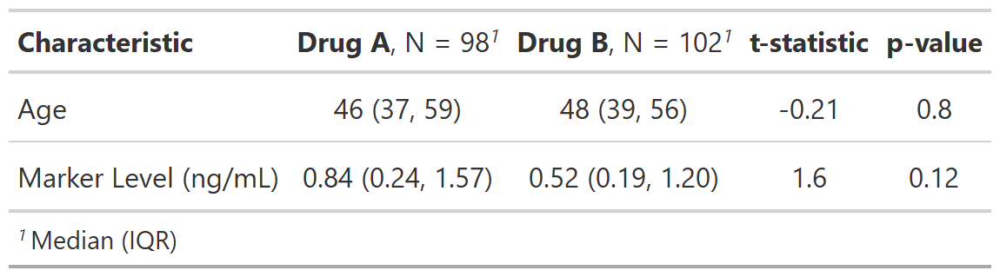

![[Maturing]](../help/figures/lifecycle-maturing.svg) The function allows a user to add a new column (or columns) of statistics to an
existing
The function allows a user to add a new column (or columns) of statistics to an
existing tbl_summary or tbl_svysummary object.
| add_stat {gtsummary} | R Documentation |
The function allows a user to add a new column (or columns) of statistics to an
existing tbl_summary or tbl_svysummary object.
add_stat( x, fns, location = NULL, fmt_fun = NULL, header = NULL, footnote = NULL, new_col_name = NULL )
x |
|
fns |
list of formulas indicating the functions that create the statistic. See details below. |
location |
list of formulas indicating the location the new statistics
are placed. The RHS of the formula must be one of |
fmt_fun |
DEPRECATED. |
header |
DEPRECATED. |
footnote |
DEPRECATED. |
new_col_name |
DEPRECATED. |
The returns from custom functions passed in fns= are required to follow a
specified format. Each of these function will execute on a single variable from
tbl_summary()/tbl_svysummary().
Each function must return a tibble or a vector. If a vector is returned, it will be converted to a tibble with one column and number of rows equal to the length of the vector.
When location = "label", the returned statistic from the custom function
must be a tibble with one row. When location = "level" the tibble must have
the same number of rows as there are levels in the variable (excluding the
row for unknown values).
Each function may take the following arguments: foo(data, variable, by, tbl, ...)
data= is the input data frame passed to tbl_summary()
variable= is a string indicating the variable to perform the calculation on
by= is a string indicating the by variable from tbl_summary=, if present
tbl= the original tbl_summary()/tbl_svysummary() object is also available to utilize
The user-defined does not need to utilize each of these inputs. It's
encouraged the user-defined function accept ... as each of the arguments
will be passed to the function, even if not all inputs are utilized by
the user's function, e.g. foo(data, variable, by, ...)
Use modify_header() to update the column headers
Use modify_fmt_fun() to update the functions that format the statistics
Use modify_footnote() to add a explanatory footnote
If you return a tibble with column names p.value or q.value, default
p-value formatting will be applied, and you may take advantage of subsequent
p-value formatting functions, such as bold_p() or add_q().
Example 1

Example 2

Example 3

library(dplyr, warn.conflicts = FALSE)
library(stringr)
# Example 1 ----------------------------------
# fn returns t-test pvalue
my_ttest <- function(data, variable, by, ...) {
t.test(data[[variable]] ~ as.factor(data[[by]]))$p.value
}
add_stat_ex1 <-
trial %>%
select(trt, age, marker) %>%
tbl_summary(by = trt, missing = "no") %>%
add_stat(fns = everything() ~ my_ttest) %>%
modify_header(
list(
add_stat_1 ~ "**p-value**",
all_stat_cols() ~ "**{level}**"
)
)
# Example 2 ----------------------------------
# fn returns t-test test statistic and pvalue
my_ttest2 <- function(data, variable, by, ...) {
t.test(data[[variable]] ~ as.factor(data[[by]])) %>%
broom::tidy() %>%
mutate(
stat = str_glue("t={style_sigfig(statistic)}, {style_pvalue(p.value, prepend_p = TRUE)}")
) %>%
pull(stat)
}
add_stat_ex2 <-
trial %>%
select(trt, age, marker) %>%
tbl_summary(by = trt, missing = "no") %>%
add_stat(fns = everything() ~ my_ttest2) %>%
modify_header(add_stat_1 ~ "**Treatment Comparison**")
# Example 3 ----------------------------------
# return test statistic and p-value is separate columns
my_ttest3 <- function(data, variable, by, ...) {
t.test(data[[variable]] ~ as.factor(data[[by]])) %>%
broom::tidy() %>%
select(statistic, p.value)
}
add_stat_ex3 <-
trial %>%
select(trt, age, marker) %>%
tbl_summary(by = trt, missing = "no") %>%
add_stat(fns = everything() ~ my_ttest3) %>%
modify_header(
list(
statistic ~ "**t-statistic**",
p.value ~ "**p-value**"
)
) %>%
modify_fmt_fun(
list(
statistic ~ style_sigfig,
p.value ~ style_pvalue
)
)